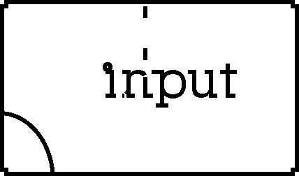

Project 1
Input and Output

Create somethings useing atleast one INPUT and one OUTPUT. This is the only requirenment for this project.
We have explored digital and analog inputs like..
- push buttons
- using conductive tapes and fabrics
- carved PCB as switch
- conductive ink
- conductive objects
- potentiometers
- conductive materials(conductive foam) as variable resistors
- photoresistors (LDR)
- piezoelemnt as vibration sensor
And we have explored digital and analog output like..
- Blinking LEDs
- Motor with transistor
- Darlington transistor with motor
- RGB LEDs
- tone()
Pay particular attention to the relationship between input, and output. Output can affent the environment that can have a effect on your input (feedback). Make variouse experiments with input and output of your choice to have better understanding of your material.

Think about "affordance" in your piece. Observe how form, materials and context of input and output can effect how people see, read and interact with your work.
For example, embedding sensor in to object that shape like a handle might suggest holding. If the output LED light flashes and if it was red, it could be read cultualy as "warning" or something bad. Or if your objects sings to your input, it can seem like if it was "happy"
This project does not have to be 'interactive' aslong as component INPUT and OUTPUT exist in the piece. You also don't need to use Arduino if you done want to.
Steps:
- Experiemnt with variose input and output materials
- Make a sketch/drawings
- Prototyping: mock up your project to seek some more findings and learn how they work
- Make some changes or try another virsion of your idea (iterations)
- repeat 3 - 4 until finalize
- make a final product
Documentation
- 2 photos or 1 short video of your work
- One paragraph description of your piece
- arduino sketch .ino file
- exported .png file form frizing
Upload documents to google doc in a folder named "Project 1"